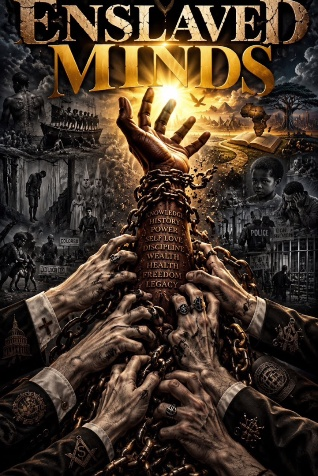
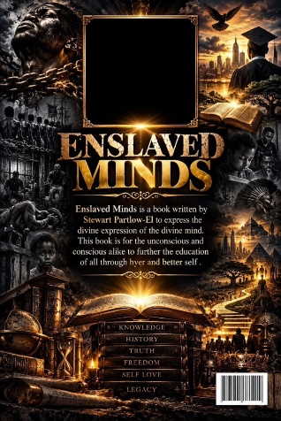

Question the familiar.
Reflect on conditioned thinking and the conscious and unconscious dimensions of thought.
Conscious & Unconscious
An invitation to look beyond conditioned thought—and explore the mind through the teachings of Moorish Science.


EXPLORE THE CONSCIOUS & UNCONSCIOUS
Enslaved Minds: Conscious & Unconscious is a pamphlet by Stewart Partlow-El that considers thought beyond the conditioned processes people use and the familiar concept of time.
Drawing on his understanding of Moorish Science and the teachings of Noble Drew Ali, Partlow-El explores national identity, spiritual understanding, and the relationship between the conscious and unconscious mind.
His stated purpose is to address confusion surrounding the spirit and its spiritual essence, inviting readers to examine these ideas through study and reflection.
“To the conscious mind and the unconscious mind…”
Reflect on conditioned thinking and the conscious and unconscious dimensions of thought.
Encounter the author’s perspective on Moorish Science and the lessons of Noble Drew Ali.
Engage with themes of national identity, spiritual understanding, and the pursuit of knowledge.
Chains, outstretched hands, books, and light give the cover its striking visual language. The imagery echoes the work’s invitation to reflect on the mind, education, identity, and freedom.
Front and back cover artwork supplied by the author.
Interested in reading Enslaved Minds? Release information and purchasing details will be added when confirmed by the author.
Contact Stewart Partlow-El
moab7publishing@gmail.com
917-264-8902